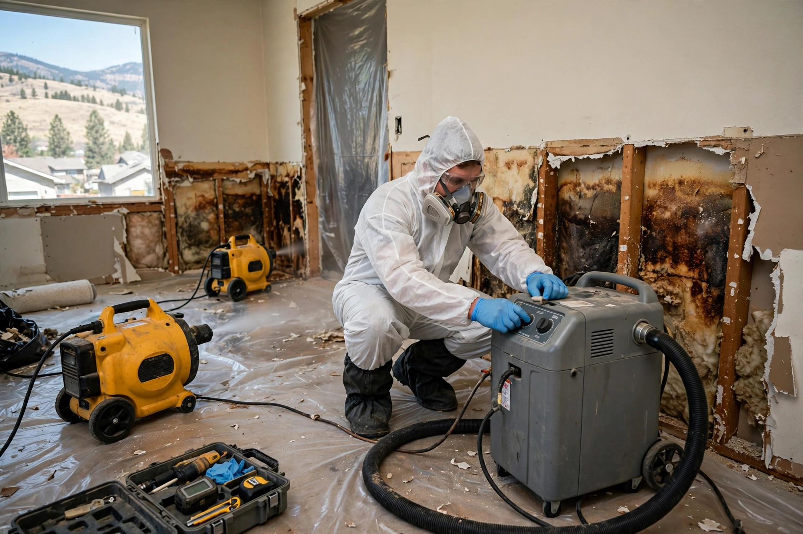

Home / Water Damage / Restoration
Boise, Idaho · Complete recovery, not just cleanupWater damage restoration that brings the house back
Standing water is only the beginning. True restoration dries the structure, removes what can't be saved, stops mold before it starts, and rebuilds — in that order.
Why Boise homes end up needing restoration
Most water losses here don't come from storms. They come from the valley's plumbing, irrigation, and winter patterns.
Canal season seepage
From April through October, the canal system pushes shallow groundwater up across parts of the valley. Basements that stay dry all winter can take on water mid-summer without a drop of rain.
Freeze-split supply lines
January cold snaps split lines in exterior walls, attics, and unheated garages. A burst line can run for hours before anyone notices.
Boise River spring runoff
Heavy snowpack years raise the river and the water table along the greenbelt. Low-lying homes see foundation seepage that needs full drying, not just a mop.
Water heater and washer failures
In newer subdivisions, the most common call is a failed water heater or washer hose. A second-floor laundry turns a small leak into a two-story job.
What a restoration typically covers
Scope depends on the water category and how far it spread. Most Boise jobs land in one of these bands:
| Scope | What's included |
|---|---|
| Single room, clean water | Extraction, drying equipment for 3 days, baseboard removal, moisture verification |
| Multi-room or one floor | Full extraction, structural drying, selective drywall removal, antimicrobial treatment |
| Whole-home or contaminated water | Everything above plus containment, full demolition of affected materials, mold prevention, coordinated rebuild |
We scope from the moisture map, not the phone call.
Restoration questions
What is the difference between water extraction and water damage restoration?
Extraction removes standing water — it's the first step. Restoration is the complete job: extraction, moisture mapping, structural drying, removal of unsalvageable materials, mold prevention, and rebuild. A home that only gets extraction often develops mold or warped materials weeks later.
How long does a full water damage restoration take in a Boise home?
Most jobs run 3 to 7 days for drying plus rebuild time. A single soaked room with clean water can dry in 3 days; a multi-room loss with drywall removal and new flooring can take two to three weeks including rebuild. Boise's dry air helps — drying equipment works faster here than in humid climates.
Will restoration require tearing out my walls and floors?
Only materials that can't be dried in place. Carpet pad and wicked drywall usually come out; hardwood, tile, and framing are dried in place whenever readings allow it. Cuts follow the meter, not guesses.
Does homeowners insurance cover water damage restoration?
Sudden events — burst pipes, appliance failures, storm-driven leaks — are typically covered. Gradual damage from long-term leaks usually isn't. We document readings and scope so your adjuster has a clear record.
How fast can mold start after water damage if restoration is delayed?
The EPA notes that mold can begin growing on damp materials within 24 to 48 hours, which is why fast drying matters more than anything else. If more than two days have passed since the water event, we treat mold prevention as part of the restoration scope from the start.
What restoration actually involves
Extraction alone leaves a wet house. These six stages take it back to dry, clean, and rebuilt.
Emergency extraction
Standing water comes out first. Every hour it sits, moisture pushes deeper into subfloor and wall cavities, so this starts the same day you call.
Moisture mapping
Meters and thermal imaging trace how far water traveled — behind baseboards, under flooring, inside wall cavities. The map decides what dries in place and what gets removed.
Structural drying
Air movers and dehumidifiers run for days, pulling moisture from framing, subfloor, and drywall. Daily readings track progress to dry standard.
Controlled demolition
Materials that can't be dried — soaked carpet pad, wicked drywall, swollen MDF — are cut out along straight lines so the rebuild is straightforward. Nothing comes out that the readings say can stay.
Mold prevention
Exposed framing gets antimicrobial treatment while it's open. Since the EPA notes mold can start within 24 to 48 hours on damp surfaces, this runs alongside drying rather than waiting until the end. See EPA — Mold, Moisture & Your Home.
Rebuild and finish
Drywall, trim, paint, and flooring go back in once readings confirm the structure is dry. The room should look and feel like the water never happened.
Parts of the restoration job
Restoration is the umbrella. These pages cover the individual pieces.
Emergency Water Extraction
Standing water out before it wicks into walls and subfloor.
Learn more → WaterFlooded Basement Cleanup
Pump-out, drying and salvage for a flooded basement.
Learn more → WaterCeiling Water Damage Repair
Stains, sagging and drips from roof or plumbing leaks.
Learn more → WaterWater Damaged Drywall Repair
Flood cuts, drying and rebuild after a leak or flood.
Learn more →A burst line in a Bench split-level
Imagine a January night on the Bench when a supply line in the garage wall splits during a hard freeze. By morning, water has crossed the garage slab, wicked up the drywall, and seeped under the wall into the finished basement rec room. Extraction comes first, then mapping shows moisture two feet up the garage drywall and across fifteen feet of basement carpet. The plan: remove drywall to the measured line, pull carpet and pad, dry the framing for four days until readings hit standard, treat the exposed studs, then hang new drywall, paint, and lay new carpet. Health context for the mold risk during those first days: CDC — Mold.
Water where it shouldn't be?
Tell us what happened — burst pipe, appliance failure, seepage, storm leak — and we'll walk you through what restoration looks like for you. The call costs nothing.